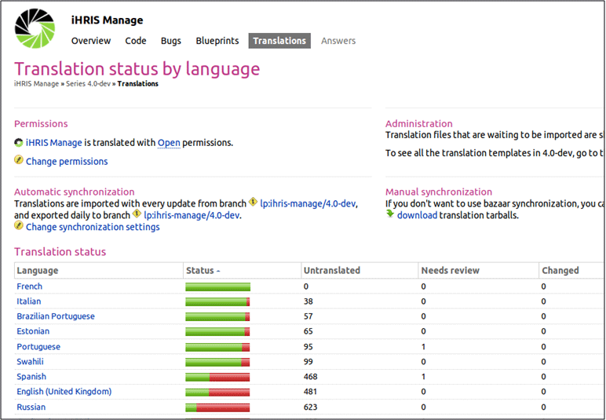
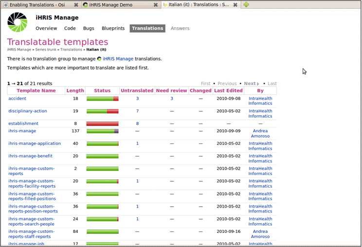
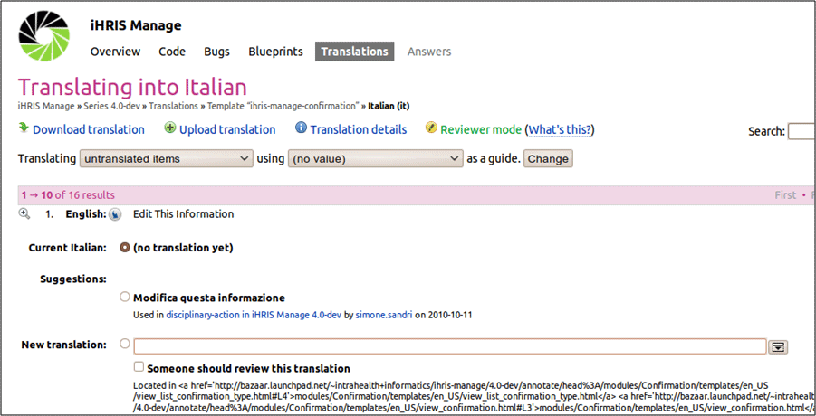

Translating iHRIS
iHRIS Administrator - Level I, © IntraHealth International, CC BY 4.0. Originally offered at hrhresourcecenter.org/elearning (CapacityPlus). Licence stated by its author, the folio owner, 2026-10-09.
1. Translating iHRIS
The iHRIS software is written in English.
iHRIS supports translation into other languages.
Translations have been provided by community volunteers.
2. Translating iHRIS
The following languages are automatically available to the system:
- French (fr_FR)
- Swahili (sw_TZ)
- Portuguese (pt_PT)
- Italian (it_IT)
- Estonian (et_ET)
The codes next to the languages above are "locales" that are used by iHRIS to keep track of translations in various languages.
3. Locales
A Locale is a pair: (language,country).
Locales are labeled in the form xx_YY:
- xx is a two letter language code
- YY is a two letter country code (ISO 3166-1)
Examples:
- en_US is English in the United States
- en_GB is English in Great Brittan
- fr_FR is French in France.
4. Translating into Other Languages
iHRIS uses Launchpad to manage all translations.
To manage translations, create an account on Launchpad: https://www.launchpad.net
Now you can add new translations by going to the following links:
- for both iHRIS Manage and Qualify
- https://translations.launchpad.net/ihris-common/4.0-dev
- https://translations.launchpad.net/i2ce/4.0-dev
- for iHRIS Manage
- https://translations.launchpad.net/ihris-manage/4.0-dev
- for iHRIS Qualify
- https://translations.launchpad.net/ihris-qualify/4.0-dev
5. Launchpad and Translations
List of available languages for translating iHRIS Manage:

6. Launchpad and Translations
Click a language get a list of modules in iHRIS Manage available for translation in that language.

7. Launchpad and Translations
Click one of the modules to get the English source text to translate.

8. Finding What To Translate
Determining in which module a specific phrase is located can be difficult. A list of all available English text can be found at: http://open.intrahealth.org/mediawiki/Technical_Documentation#Translations
[image not in the backup: slide0007_image010.gif]
9. Launchpad and Translations
Every night, Launchpad updates all the translations available by saving to the approriate xx.po and xx_YY.po files.
Example: it.po files contain the English text as "msgid" as well as its translation to Italian as "msgstr"
[image not in the backup: slide0008_image012.gif]
10. Other Languages
Some languages have only been partially translated in Launchpad.
For other languages, iHRIS must process xx.po or xx_YY.po files.
Example: Process all "fr.po" files to produce French versions of all .html and .xml files: cd /var/lib/iHRIS/lib/4.0.10/I2CE php ../I2CE/tools/translate_templates.php --locales=fr cd ../ihris-common php ../I2CE/tools/translate_templates.php --locales=fr cd ../ihris-manage php ../I2CE/tools/translate_templates.php --locales=fr cd ../ihris-qualify php ../I2CE/tools/translate_templates.php --locales=fr
11. Marking English for Translation
HTML template and XML configuration files can be translated.
Magicdata in configuration files XML is marked as translatable by locale='en_US'.
HTML template files are marked as translatable by putting them in a en_US subdirectory.
Translations read from .po files which are downloaded automatically from Launchpad.
Source
Lesson in Section 3 of iHRIS Administrator - Level I, Moodle course module cm-57; library/ihris-admin-course/modules/cm-57.md.